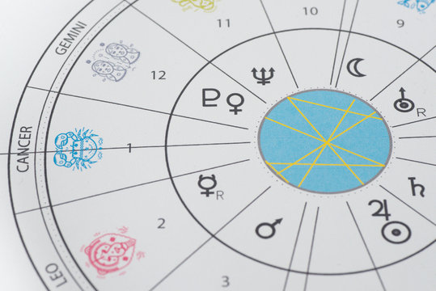
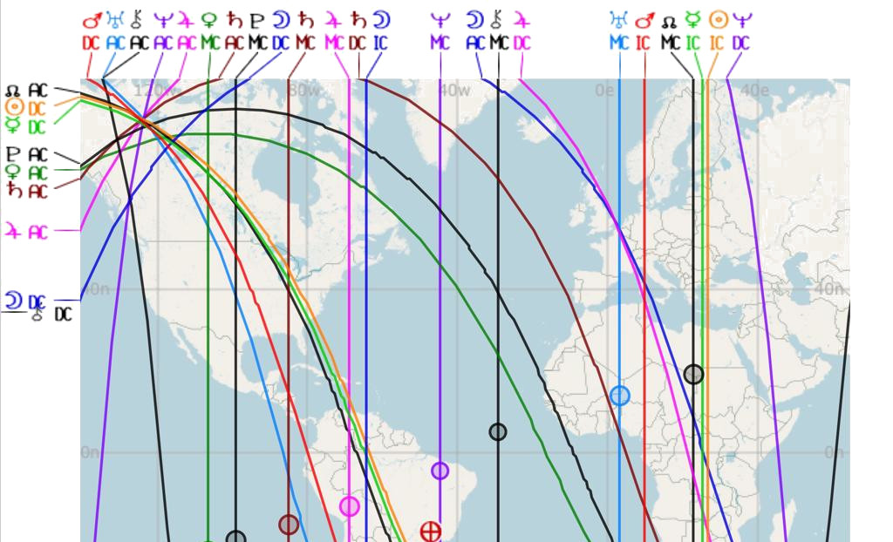

Mapa Astral

A Leitura de
Revolução Solar
A leitura da Revolução Solar mostra como serão as energias para o seu ano pessoal considerando a data do seu aniversário até a do ano seguinte. Identificamos as energias que estarão intensas, fluidas e desafiadoras, bem como o ascendente que dará o tom para seu ano, o que te ajudará a dar passos mais firmes na direção dos seus planejamentos. (Essa leitura é indicado fazer após a leitura do seu Mapa astral e antes do seu aniversário ou até 3 meses depois)
Astrocartografia
A Astrocartografia é a vertente da astrologia que a combina com viagens.Com Astrocartografia é possivel ativar uma energia planetária viajando para um determinado local. No atendimento astrocartográfico vemos também seu mapa relocado para sabermos como aquele planeta te afetará naquele local.
Atendimento Astrológico
Os atendimentos astrológicos de mapa natal, revolução solar ou astrocartografia são encontros por vídeo e ao vivo pelo Google meets com data e horário previamente agendados com duração de até 1h30 aproximadamente. Após o encontro você receberá a gravação do atendimento. Para obtermos o seu mapa faz-se necessário o preenchimento do formulário abaixo, feito isso é so enviar suas informações e o mapa será estabelecido.